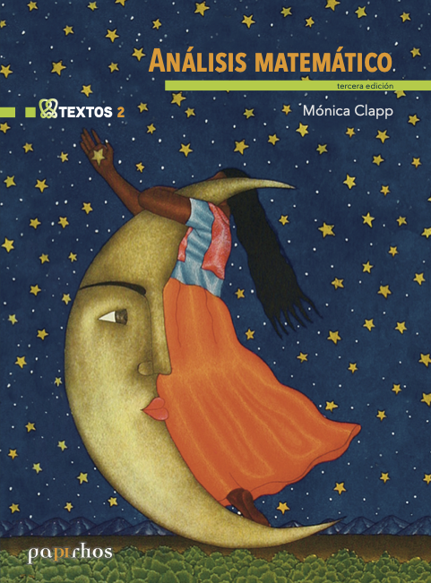
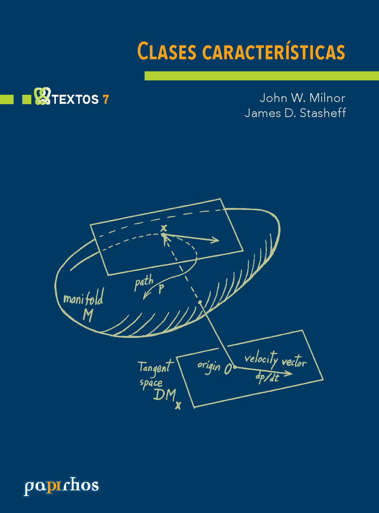
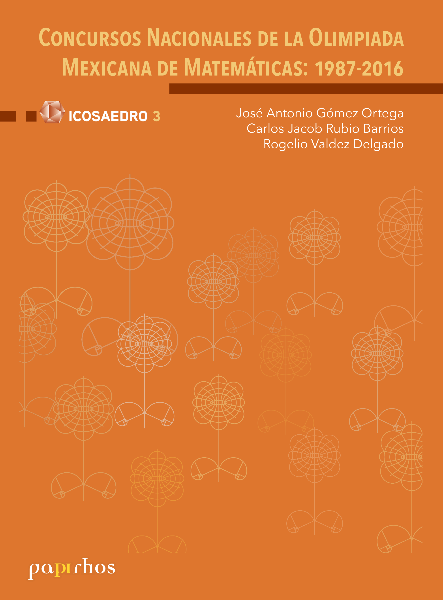
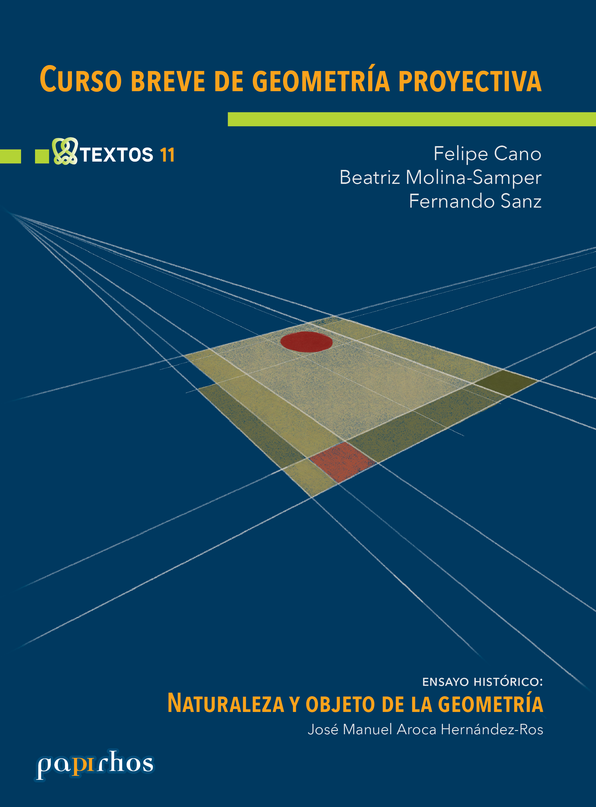
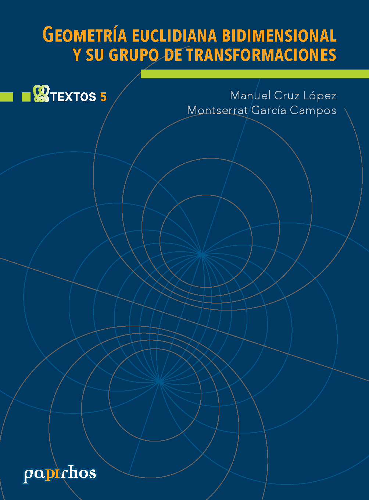
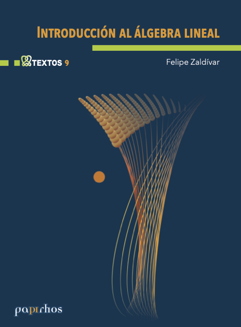
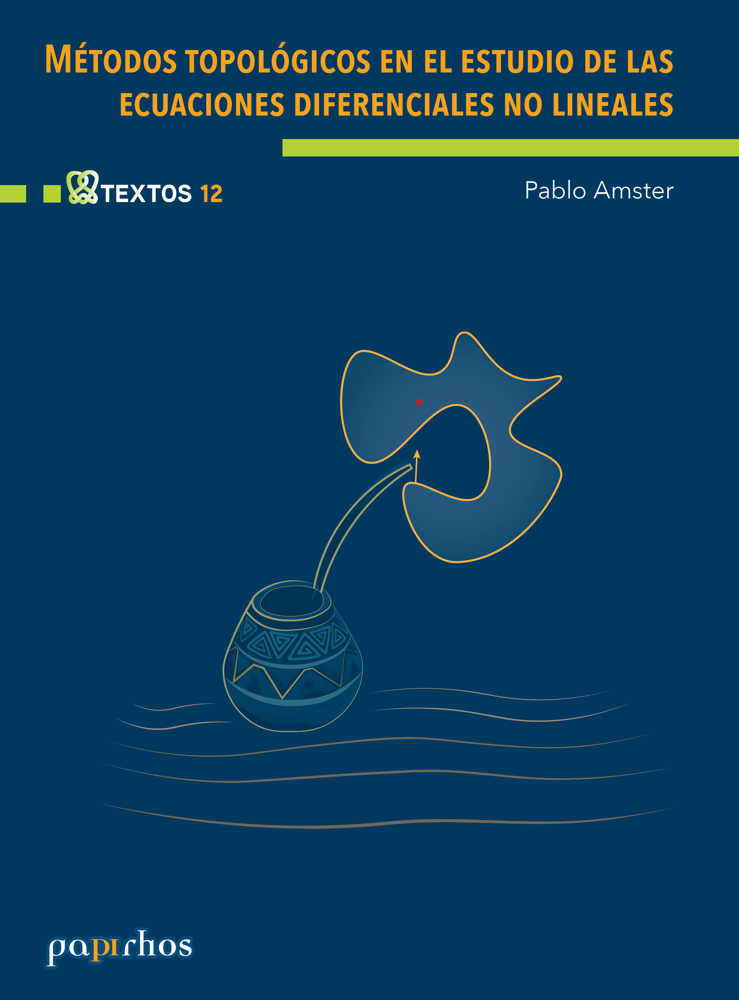
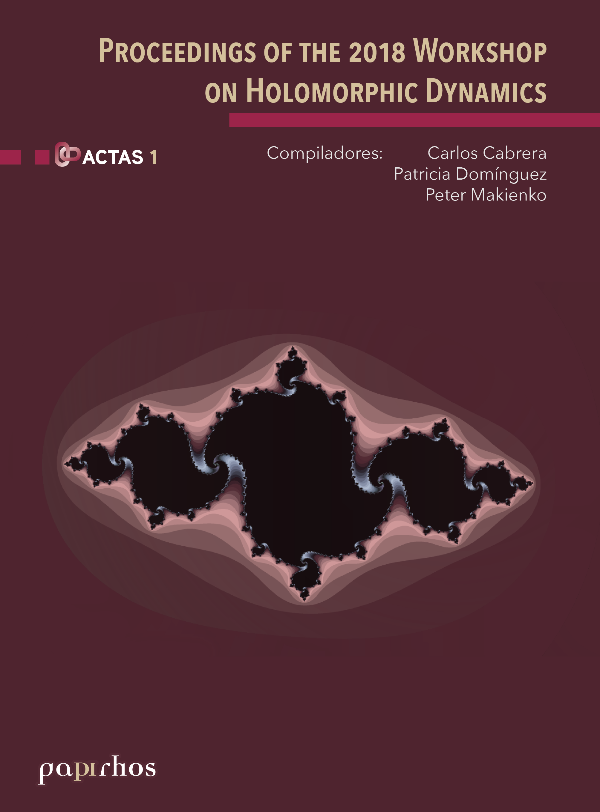
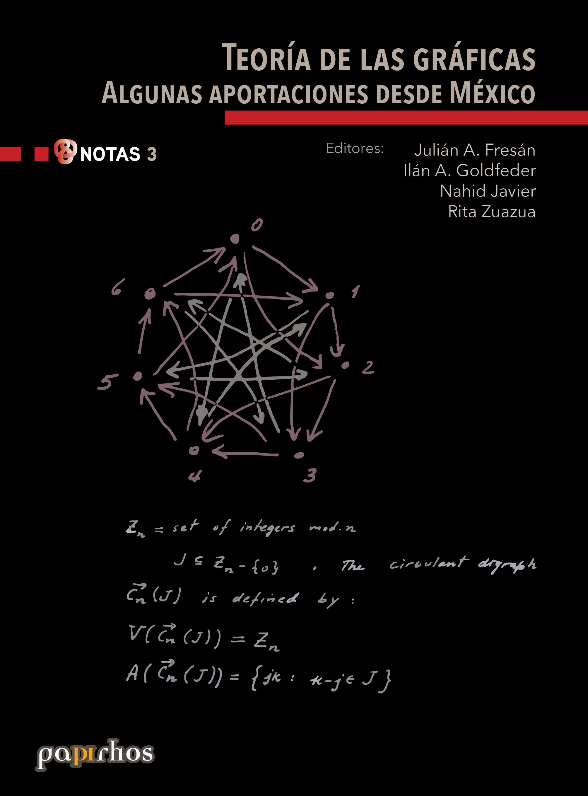
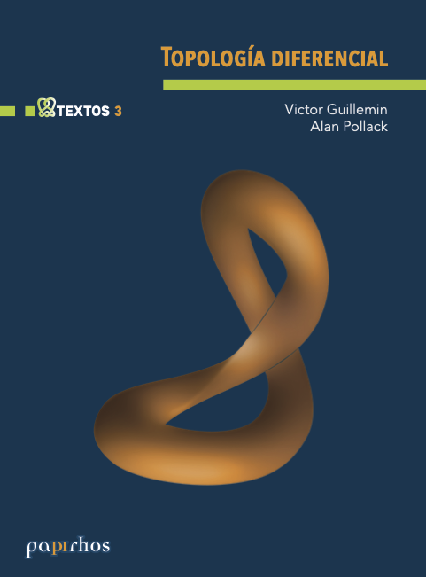

Colecciones
Explora por colección
Consulta los títulos disponibles de Papirhos Digital organizados por colección. Cada sección reúne libros con sus fichas bibliográficas, metadatos de edición, reimpresiones registradas y archivos disponibles.
Cuadernos de olimpiadas de matemáticas
Papirhos

Análisis Matemático
Mónica Clapp
Textos
Disponible en formato físico

Clases características
John Milnor, James Stasheff
Textos
Disponible en formato físico

Concursos Nacionales de la Olimpiada Mexicana de Matemáticas:1987-2016
Jose Antonio Gómez Ortega, Carlos Jacob Rubio Barrios, Rogelio Valdez Delgado
Icosaedro
Disponible en formato físico

Curso breve de geometría proyectiva
Felipe Cano, Beatriz Molina-Samper, Fernando Sanz
Textos
Disponible en formato físico

Curso introductorio de álgebra I
Diana Avella, Gabriela Campero
Textos
Disponible en línea
Curso introductorio de álgebra II
Diana Avella, Gabriela Campero, Edith Corina Saenz Valadez
Textos
Disponible en línea

Geometría euclidiana bidimensional y su grupo de transformaciones
Manuel Cruz, Montserrat García
Textos
Disponible en formato físico
Grupos I
Diana Avella, Octavio Mendoza, Edith Corina Saenz Valadez, María José Souto
Textos
Disponible en línea

Grupos II
Diana Avella, Octavio Mendoza, Edith Corina Saenz Valadez, María José Souto
Textos
Disponible en línea

Introducción al álgebra lineal
Felipe Zaldivar
Textos
Disponible en formato físico

Métodos topológicos en el estudio de las ecuaciones diferenciales no lineales
Pablo Amster
Textos
Disponible en formato físico

Por la senda de los círculos
Cecilia Neve Jimenez, Laura Rosales Ortiz
Mixbaal
Pendiente de recibir

Proceedings of the Workshop on Holomorphic Dynamics
Patricia Dominguez Soto, Peter Makienko, Carlos Cabrera Ocañas
Actas
Disponible en formato físico

Teoría de las gráficas: algunas aportaciones desde México
Julian Fresán, Ilán Goldfeder, Nahid Javier, Rita Zuazua
Notas
Disponible en formato físico

Teoría de singularidades en topología, geometría y foliaciones I
Jean-Paul Brasselet, Felipe Cano, Dominique Cerveau, Dung Tráng Lê, Frank Loray, Mutsuo Oka, José Seade, Mark Spivakovsky
Notas
Disponible en línea

Teoría de singularidades en topología, geometría y foliaciones II
Jean-Paul Brasselet, Felipe Cano, Dominique Cerveau, Dung Tráng Lê, Frank Loray, Mutsuo Oka, José Seade, Mark Spivakovsky
Notas
Disponible en formato físico

Topología Diferencial
Victor Guillemin, Allan Pollack
Textos
Disponible en formato físico